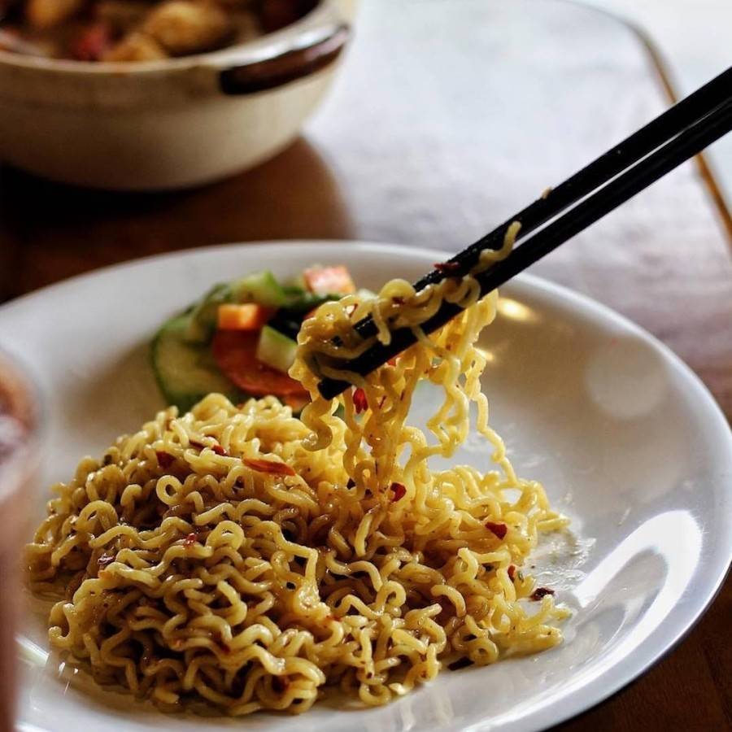

Indomie Recipe

Description
Now we are going to create Indomie! the best instant noodle in the world! For this specific recipe, we are going to use the Indomie goreng variant or translated to fried Indomie (not actually fried tho!). So lets begin! But before we can begin, we need to prepare some ingredients and cookwares first. Here they are:
- Water
- Cooking pot
- Spoon
- Plate
Ingredients
For the ingredients are all actually inside the package already! So there's no need to worry okay :)
- Dried noodle
- Oil
- Chili sauce and soy sauce
- Powder seasoning
- Fried onion
Steps
Making steps are pretty straightforward, here they are!
- Boil the water
- Put the dried noodle in the boiled water (watch out for hot water!)
- While waiting until the noodle is cooked, put the oil and all the sauce on your plate and mix it up real good
- After the noodle is finished, discard the water and put the noodle on the plate. Once again mix it up real good with the oil and sauce (yum!)
- Put the fried onion sprinkle on top and voila you're done!
Back to homepage